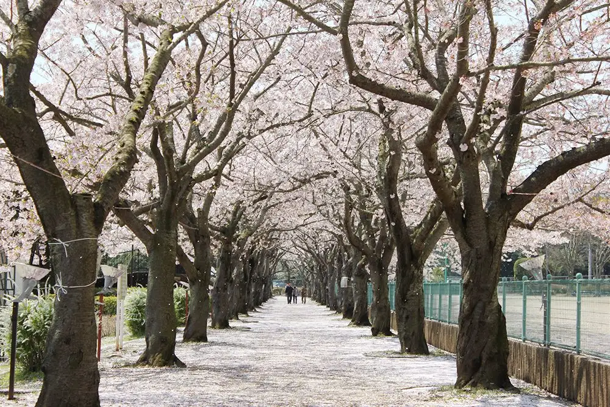
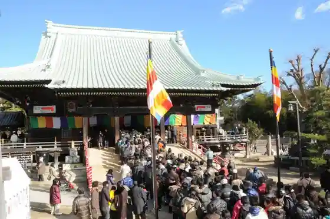
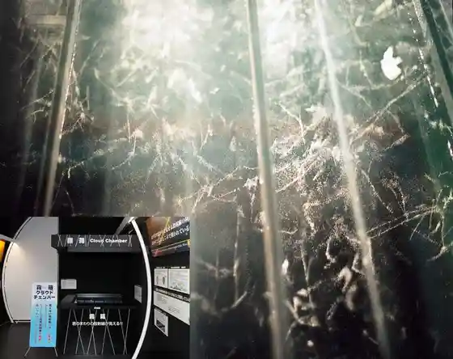
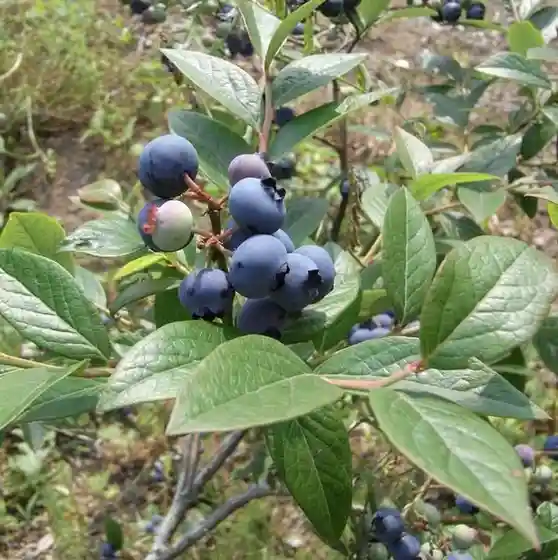

Japan / Ibaraki / Tokaimura
Tokaimura
Tokaimura · Ibaraki
Tokaimura
Highlighted on the Ibaraki map.

Sights
Muramatsu Yama Kokuzo Do
Tokaimura, Ibaraki · Official / source link

Akogigaura Park (Akogigaurakoen)
Tokaimura, Ibaraki · Official / source link
Genshiryoku Science Museum
Tokaimura, Ibaraki · Official / source link

Fujito Ichigo Sono
Tokaimura, Ibaraki · Official / source link

Mitsubishi Genshi Nenryo
Tokaimura, Ibaraki · Official / source link
Mito Hakkei (Muramatsu Seiran)
Tokaimura, Ibaraki · Official / source link
Terunumakatsuichi Shoten (Nature Shoku no O Mise Hinata)
Tokaimura, Ibaraki · Official / source link
Tokaimura Famazumagatto
Tokaimura, Ibaraki · Official / source link
Kajuaruresutoran Gurunuiyu
Tokaimura, Ibaraki · Official / source link
Sakana Yasushi
Tokaimura, Ibaraki · Official / source link
Udon City Tokaimura Mise
Tokaimura, Ibaraki · Official / source link
Hana Ichimonme
Tokaimura, Ibaraki · Official / source link